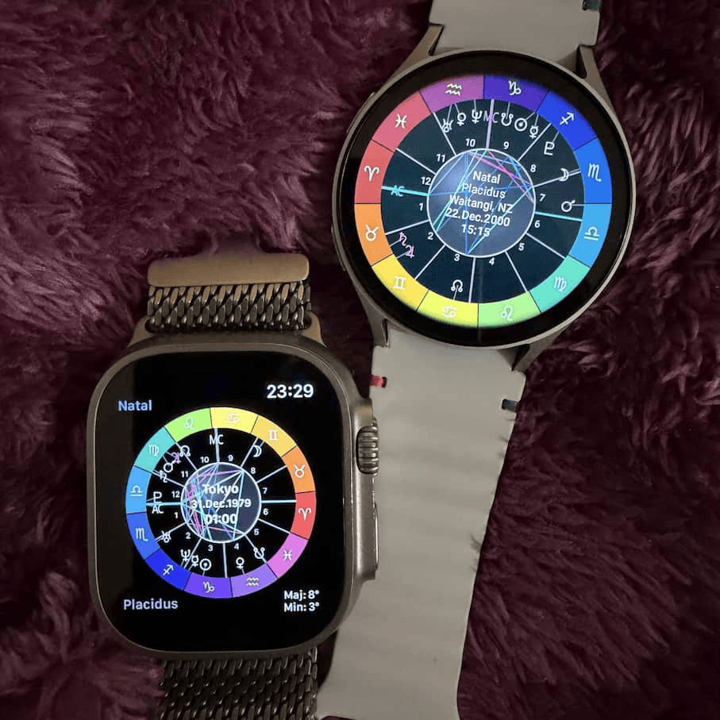

Hello
My name is Anya and I dedicated to Kotlin, Swift, Mantra, Astrology and Earthy activities.


I have created SolarJewel as gift to the spiratual community. SolarJewel is a high-precision astronomical instrument born from years of dedicated study across UX/UI, graphics, native development and spiritual studies. You can now wear the ancient art of the heavens while staying engaged in the earth plane.
The jewel was always there, and has transformed from ancient geometry, to compute evolution, to modern hardware and continues...

SolarJewel is now avaiable for WatchOS and WearOS.
Feel free to check my other work as well